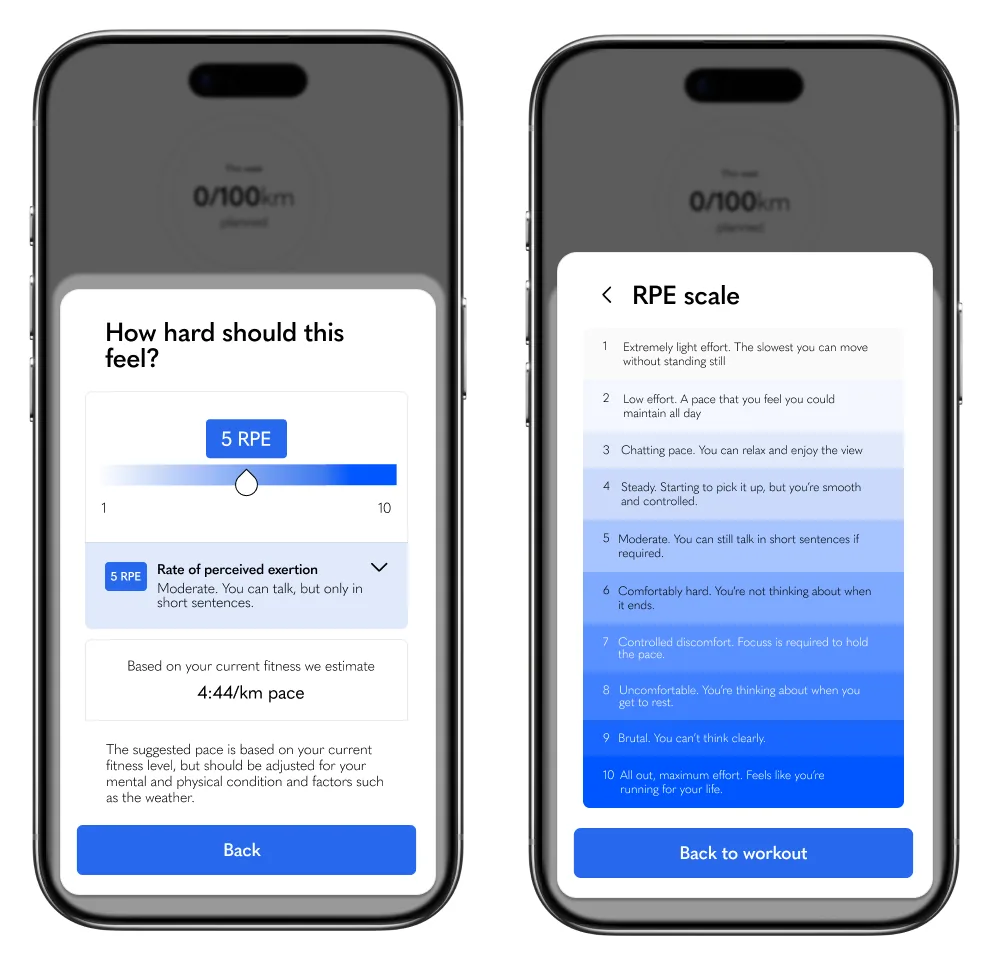
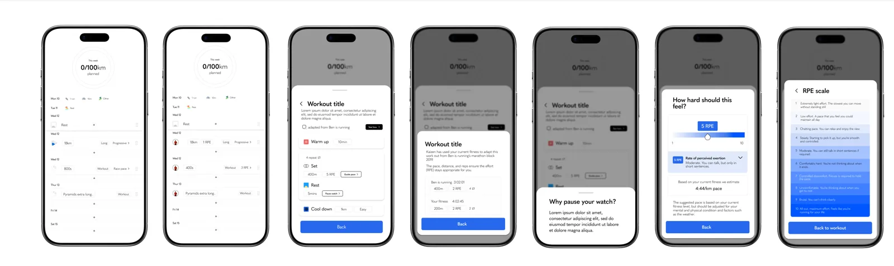

<!doctype html>
<html lang="en">
<head>
<meta charset="utf-8">
<meta name="viewport" content="width=device-width, initial-scale=1, viewport-fit=cover">
<title>Effort, not pace · Studio Vincent</title>
<meta name="description" content="Why Kaizen asks runners how hard a run should feel, rather than how fast it should be.">
<link rel="icon" href="/favicons/favicon-32x32.png">
<link rel="preconnect" href="https://fonts.googleapis.com"><link rel="preconnect" href="https://fonts.gstatic.com" crossorigin>
<link href="https://fonts.googleapis.com/css2?family=Cormorant+Garamond:wght@300;500&display=swap" rel="stylesheet">
<link rel="stylesheet" href="/lab/lab.css">
<!-- Effort, not pace: the RPE control in Kaizen. A first draft for Fred to rewrite. -->
<style>
.story-wrap { display: grid; grid-template-columns: 200px minmax(0, 620px) 1fr; gap: 0 clamp(24px, 4vw, 64px); padding: clamp(40px, 6vw, 80px) var(--gutter) 0; }
.toc { position: sticky; top: 92px; align-self: start; }
.story h1 { margin: 0 0 8px; font: 400 clamp(32px, 4.5vw, 44px)/1.1 var(--display); letter-spacing: -.015em; }
.story > time { color: var(--grey); font-size: 13px; display: block; margin-bottom: 28px; }
.story p { margin: 0 0 18px; font-size: 15.5px; line-height: 1.65; position: relative; }
.story h2 { margin: 56px 0 14px; font: 400 clamp(22px, 2.6vw, 28px)/1.2 var(--display); scroll-margin-top: 90px; }
.story figure { margin: 26px 0 30px; }
.story figcaption { color: var(--grey); font-size: 13px; text-align: center; margin-top: 10px; }
.frame { background: #F4F4F2; border: 1px solid var(--rule); border-radius: 10px; overflow: hidden; }
.frame-bar { display: flex; align-items: center; gap: 6px; padding: 9px 12px; border-bottom: 1px solid var(--rule); }
.frame-bar i { width: 9px; height: 9px; border-radius: 50%; background: #D9D9D5; }
.frame-bar span { margin-left: 10px; font-size: 11.5px; color: var(--grey); background: #fff; border-radius: 5px; padding: 3px 10px; }
.frame video, .frame img { width: 100%; height: auto; }
.plain img { border-radius: 8px; }
.mark { background: #000; border-radius: 10px; padding: 16% 12%; }
.end { margin-top: 56px; color: var(--grey); font-size: 14px; }
.end a { color: var(--ink); }
/* A phone recording, held at a phone's size on a pale ground. */
.story figure.phone { display: flex; justify-content: center; padding: clamp(28px, 5vw, 56px) 0; background: #EAF0F7; border-radius: 10px; }
.story figure.phone video { width: min(300px, 70%); height: auto; aspect-ratio: 576 / 1174; border-radius: 13.5% / 6.6%; box-shadow: 0 1px 2px rgba(20, 30, 50, .08), 0 16px 36px rgba(20, 30, 50, .14); }
/* A picture set out to the side of the text, in the empty right-hand column.
   Put it straight before the paragraph it belongs with. On narrower screens
   it drops back into the flow at a smaller size. */
.story { position: relative; }
.story figure.aside { position: absolute; left: calc(100% + clamp(24px, 4vw, 64px)); width: clamp(180px, 18vw, 260px); margin: 4px 0 0; }
.story figure.aside img { width: 100%; height: auto; border-radius: 8px; }
.story figure.aside figcaption { text-align: left; }
@media (max-width: 1080px) {
  .story-wrap { grid-template-columns: minmax(0, 620px) auto; justify-content: center; }
  .toc { display: none; }
  .story figure.aside { position: static; width: 60%; margin: 22px 0 26px; }
}
@media (max-width: 759px) {
  .story-wrap { grid-template-columns: minmax(0, 620px); }
}
</style>
</head>
<body>

<header class="top">
  <a href="/next/" class="brand" aria-label="Studio Vincent, home"><span class="studio">Studio</span></a>
  <nav class="top-nav" aria-label="Primary">
    <a href="/next/#work">Work</a>
    <a href="/lab/" aria-current="page">Lab</a>
    <a href="/next/about/">About</a>
  </nav>
</header>

<div class="story-wrap">
  <nav class="toc" aria-label="Contents">
    <a class="back" href="/lab/">Lab</a>
    <a href="#numbers">Numbers that don't know you</a>
    <a href="#feel">A scale you can feel</a>
    <a href="#slide">One slide</a>
  </nav>

  <article class="story">
    <h1>Effort, not pace</h1>
    <time datetime="2026-11">Nov 2026</time>

    <p>In Kaizen, every suggested run is set by how hard it should feel rather than how fast it should be, and changing it is one slide of your thumb.</p>
    <figure class="phone in-flow-only">
      
src="/work/kaizen-brand-and-product/kaizen-rpe.mp4" poster="/work/kaizen-brand-and-product/kaizen-rpe-7.webp" muted loop playsinline preload="none" data-story-film aria-label="Editing a suggested run: the rate of perceived effort slides from 7 down to 4, the run saves, and the target pace eases from 5:06 to 5:50 per kilometre."></video>
    </figure>

    <h2 id="numbers">Numbers that don't know you</h2>
    <p>Distance and speed are the obvious things to plan a run around, and they're the numbers every watch shows you, but they're fairly arbitrary on their own. Five kilometres at five minutes a kilometre is an easy morning for one person and a race for another, and the same run is a different run on a hot day, a hilly route or a week when you've slept badly.</p>
    <p>The people Kaizen was built for already knew a lot about running, and they knew this. What they needed was a plan that spoke about the run the way they actually experience it.</p>

    <h2 id="feel">A scale you can feel</h2>
    <p>Rate of perceived effort, RPE, is a scale from one to ten of how hard a run feels. It's personal by design, it already takes in the weather, the hills and how tired you are, and it's something experienced runners use all the time without thinking about it as a measurement.</p>
    <figure class="plain">
      
      <figcaption>Earlier designs: how hard a run should feel, and the whole scale from one to ten.</figcaption>
    </figure>
    <p>So each run carries an RPE and a few words for what that number means, "controlled discomfort, requires focus to hold the pace" at seven, and the pace sits underneath it as an estimate rather than a target. The sheet says it plainly: other factors will impact your pace on the day, so listen to your body and prioritise hitting the RPE.</p>

    <figure class="plain wide-strip">
      
      <figcaption>Earlier designs, from the week's plan through a workout to setting its effort.</figcaption>
    </figure>

    <h2 id="slide">One slide</h2>
    <p>If a run should feel different, you slide the effort, and everything follows it. The description changes, the estimated pace eases or tightens from your own fitness, and the suggested run becomes yours. It's only ever a suggestion, and Kaizen will always adapt to what you actually do.</p>

    <p class="end">The full project is in the <a href="/work/kaizen-brand-and-product/">Kaizen case study</a>.</p>
  </article>

  <aside class="rail" aria-label="The interaction">
    <figure>
      <video src="/work/kaizen-brand-and-product/kaizen-rpe.mp4" poster="/work/kaizen-brand-and-product/kaizen-rpe-7.webp" muted loop playsinline preload="none" data-story-film aria-label="Editing a suggested run: the rate of perceived effort slides from 7 down to 4, and the target pace eases from 5:06 to 5:50 per kilometre."></video>
      <figcaption>From 7 to 4: the description and the pace follow the effort.</figcaption>
    </figure>
  </aside>
</div>

<section class="outro" aria-labelledby="hire-h">
  <h2 id="hire-h">Available for hire; contact me for availability.</h2>
  <p class="sub">Open to founders and product teams who want help finding the version of the work that's worth committing to.</p>
  <a class="outro-cta" href="https://calendar.google.com/calendar/appointments/schedules/AcZssZ0tSbreJP2GrWtDqVP5myGjm9mvIju11U_wqTHu0mKjPbdVd7FPhXyXcOpRapec0Ke4bjKWrm03?gv=true" target="_blank" rel="noopener noreferrer"><span>Book an intro call</span><svg width="17" height="9" viewBox="0 0 16.48 8.9" aria-hidden="true"><path fill="currentColor" d="M15.303 0.202C15.572 -0.067 16.009 -0.067 16.278 0.202C16.547 0.472 16.548 0.908 16.278 1.178L8.756 8.699C8.621 8.834 8.444 8.901 8.267 8.9C8.074 8.914 7.876 8.852 7.728 8.704L0.202 1.178C-0.067 0.908 -0.067 0.472 0.202 0.202C0.472 -0.067 0.908 -0.067 1.178 0.202L8.239 7.264L15.303 0.202Z"/></svg></a>

  <a class="tease" href="/lab/stories/week-to-week/">
    <span class="tease-thumb"><video src="/work/kaizen-brand-and-product/kaizen-weeks.mp4" poster="/work/kaizen-brand-and-product/kaizen-weeks.webp" muted loop playsinline preload="none" data-story-film aria-hidden="true"></video></span>
    <span>
      <span class="tease-label">Next in the lab</span>
      <span class="tease-title">Week to week</span>
      <span class="tease-desc">How a training plan becomes one week and a timeline you flick through.</span>
    </span>
    <svg width="17" height="9" viewBox="0 0 16.48 8.9" aria-hidden="true"><path fill="currentColor" d="M15.303 0.202C15.572 -0.067 16.009 -0.067 16.278 0.202C16.547 0.472 16.548 0.908 16.278 1.178L8.756 8.699C8.621 8.834 8.444 8.901 8.267 8.9C8.074 8.914 7.876 8.852 7.728 8.704L0.202 1.178C-0.067 0.908 -0.067 0.472 0.202 0.202C0.472 -0.067 0.908 -0.067 1.178 0.202L8.239 7.264L15.303 0.202Z"/></svg>
  </a>
</section>

<footer class="outro-foot">
  <span>© Coded by Fred 2026 | No cookies or analytics are used on this site</span>
  <nav aria-label="Elsewhere">
    <a href="/lab/">Lab</a>
    <a href="https://www.linkedin.com/in/studiovincent" target="_blank" rel="noopener">LinkedIn</a>
    <a href="https://studiovincent.substack.com" target="_blank" rel="noopener">Substack</a>
    <a data-mail href="#">Email</a>
  </nav>
</footer>

<script src="/lab/site.js"></script>
<script src="/lab/story.js"></script>
</body>
</html>
